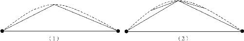
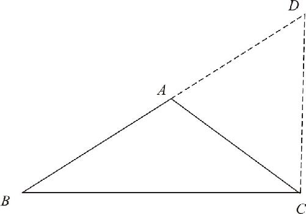
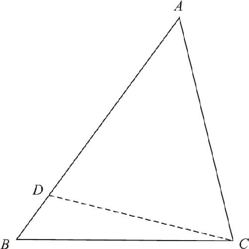

弓形曲线不一定是标准的圆形或者弧形，怎样计算出它的长度呢？接下来，我们还要继续简化．
在弓形曲线上画个点，然后把线段的两头分别和这个点连接起来，这样一来，弓形曲线就又被分成了两段，画出来的两条线段就成了一条折线，现在我只要证明直线段的长度小于折线段的长度，折线段的长度再小于外边的弓形曲线的长度就可以了，这相当于a ＜b ，b ＜c ，所以a ＜c ．首先要证明弓形长度大于折线段长度，然后再证明折线段长度大于直线段长度．

图5－7
怎么证明半截弓形曲线大于半截折线呢？如果放大这个图形就会发现，这半截的弓形仍然是一个弓形，而这半截的折线是个直线段，这意味着什么呢？只要我们能证明外边这个直线段长度小于第一次的折线段，将来也可以再用这个定理去证明后续画出的其他折线，这个推理过程可以无限往后推导．明白了这一点，我们想要证明的核心问题就是：折线段的长大于直线段的长．只要证明了这一点，就能得到最终的证明．因此可以把其他线路去掉，只看折线的这部分：直线段和两条折线段共同凑成了一个三角形．两段折线段加起来大于直线段的意思就是说，三角形的两边之和大于第三边，这是我们对这个问题的第二次简化．
现在聚焦到这个问题上，画出任意一个△ABC ，如图5－8所示，AB 、AC 两边之和大于第三边BC 吗？既然要求两边之和，我们就把两边之和画出来．在此，我们只需要把左边BA 往上延长到D ，延伸出来的长度AD 正好等于右边的长度AC 就可以了．这样的话，我们新作出来的线段BD 就是AB 和AC 两边之和了．那么，BD 大于BC 吗？我们再添上一条线，把右侧的两个点CD 连结起来，这样就形成了一个更大的△DBC ．

图5－8
由于AD 和AC 长度相同，所以右侧的△ACD 就是一个等腰三角形，根据等边对等角的定理，既然AD ＝AC ，那它右边这两个底角∠ADC 和∠ACD 肯定是相等的．现在换个角度想想：整个△DBC ，它的顶角∠D 就是等腰三角形的一个底角，它左边DB 的总长度等于原来△ABC 两边的和，底边等于原来三角形的底边BC ．因此我们原来想要判断的定理，三角形两边之和大于第三边的问题，就转变成了△DBC 的左边DB 是否比底边BC 长的问题了．这样，我们就把一个△ABC 三边的比较，换成了一个△DBC 两边的比较．
那么，△DBC 有什么特点呢？它被分成了两部分，下半部分是原来的△ABC ，上半部分是等腰△ACD ，在△ACD 中，一个底角∠D 是大三角形的顶角，另一个底角∠ACD 是大三角形∠BCD 的一部分，也就是说∠BCD ＝∠ACD ＋∠ACB ．由于等腰三角形底角相等，∠D ＝∠ACD ，所以∠BCD ＝∠D ＋∠ACB ．也就是说，在△DCB 中，顶角∠D 小于右侧的底角∠BCD ．我们需要证明的问题是DB 的长度大于BC 的长度，但现在我们无法知道这两条边的具体长短，只能知道DB 对着的∠BCD 大于BC 对着的∠D ．因此，我们只要知道“在一个三角形内，大角对着的边比较大，小角对着的边比较小”就可以了．于是，我们的第三次简化完成．
现在需要证明的是：三角形内，大角对大边！是不是这样呢？让我们重新画一张图（如图5－9）来讨论，在△ABC 中，已知AB ＞AC ，求证：AB 对着的∠C 大于AC 对着的∠B ．关于三角形的边角关系，我们只知道等边对等角这一个道理，因此，要想对不相等的边角作比较，我们只能在内部先作出一个一样的条件来才可以．因为左边AB 比较大，所以我们就可以从顶点开始用圆规在左边AB 上截出一段线段AD 来，让它和三角形的右边AC 长度是相等的，然后连结CD ，这样就形成一个等腰三角形——△ADC ，不过这个等腰三角形是尖朝上的，因为我们截的边AD 和AC 相等，所以它的两个底角∠ADC 和∠ACD 肯定就是相等的．这个图形一出来，我们就看到原来的三角形右底角∠C 被一分为二了，上半部分∠ACD 是等腰三角形的一个底角，下半部分还剩了一个小角∠DCB ，我们要把它们和原来的∠B 对比，就看看它们之间是否存在可比的等量关系．根据图示，我们发现等腰三角形的底角∠ADC 正好是△DBC 的一个外角，根据外角等于不相邻的两个内角和，于是我们就知道∠ADC ＝∠B ＋∠DCB ．等量关系都找好了，我们就可以把证明过程完整地梳理出来了．

图5－9
在△ABC 中，
∵AB ＞AC ，∴可在AB 上截取一点D 使得AD ＝AC ，而后连结CD ．
∵AD ＝AC ，
∴∠ADC ＝∠ACD ．
∵∠ADC ＝∠B ＋∠DCB （三角形外角定理），
又∵∠ACB ＝∠ACD ＋∠DCB ，
∴∠ACB ＝∠ADC ＋∠DCB （等量代换）
＝∠B ＋∠DCB ＋∠DCB （等量代换），
∴∠ACB ＞∠B （整体大于部分）．
于是，我们得到了结论：在一个三角形内，大边对大角．
我们得到最终结论了吗？还没有，因为需要证明的结论是大角对大边，刚才的结论是大边对大角．那么我们能否通过大边对大角证明一下大角对大边呢？可以！我们可以假设大角不对大边，那大角对着的是什么边？只有两种可能，一种情况是大角和小角对着的边相等，另一种情况是大角对着的边反而小．先看第一种可能，大角和小角对着的边相等，这有可能吗？不可能，因为我们学过等角对等边的定理．大角对着的边反而小是不可能的，因为我们刚刚证明的就是大边对大角，两种可能性都没有，所以，结果只能是大角对大边．于是我们又通过反证法得出了正确结论：同一三角形中，大角对大边．
经过三次简化以后，我们得到这么多定理，现在可以翻回去证明我们该证的东西了：在三角形中，因为大边对大角，所以大角对大边；因为大角对大边，所以三角形两边之和大于第三边；因为两边之和大于第三边，所以折线段的总长大于直线段的，又因为曲线内部可以不断地作出折线来，所以曲线的长度大于折线段的，折线段的长度大于直线段的．所以我们得出了最终结论：两点之间，直线段的距离最短．
通过对一个定理的追问，一连串追问，问出四个定理．一个如此浅显的道理，居然也是可以证明的，而且它的证明过程居然如此复杂．如果你理解了这个过程的奇妙，你也就理解了为什么有那么多数学家会痴迷于简单的数学猜想的证明．那是因为，在这些证明的背后，隐藏着一个全新的不为人知的世界，过去我们曾经因为不断追问小数减去大数等于多少，发现了负数；因为不断追问根号2等于多少，我们发现了无理数；在高中阶段，我们还会因为追问负数的平方根是多少，发现虚数和向量．数学就是在这些不断追问、不断求索中不断发展的，人类文明也就因此不断进取、不断前行．